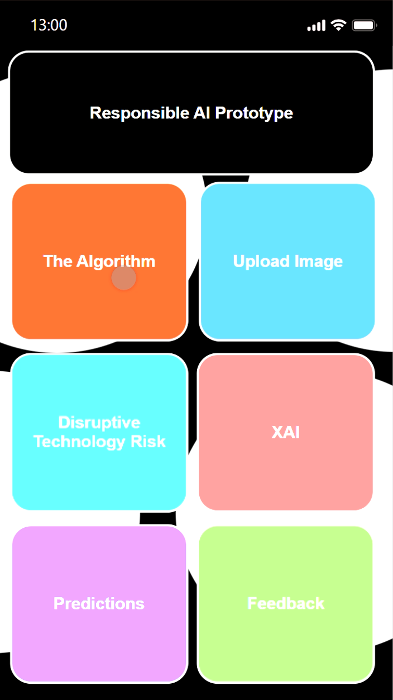

.png)



Hoofdscherm
De gebruiker komt op het hoofdscherm waar knoppen aanwezig zijn waarmee hij kan interacteren om door de applicatie te navigeren.
.jpeg)
Hoi, ik ben Anouk.
Als een Artificial Intelligence student aan Breda University of Applied Sciences vertaal ik data naar waardevolle en begrijpelijke inzichten. Mijn doel is om resultaten te verbeteren, de juiste beslissingen te nemen en de AI zo ethisch mogelijk te laten zijn. Ik heb ervaring met machine learning, supervised en unsupervised algoritmes en ik gebruik datavisualisatie technieken om de resultaten te presenteren.
Van jongs af aan heb ik het altijd al leuk gevonden om puzzels op te lossen en dingen te bouwen. Dus zo kijk ik naar big data sets: voor mij is het één grote puzzel die ik wil oplossen. Het vinden van patronen die niemand anders ziet, is een leuke uitdaging voor mij.
In mijn vrije tijd speel ik graag voetbal, games en ook doe ik graag aan programmeren. Aangezien ik een tweedejaars ben, is coderen een groot deel van mij. Ik wil mezelf altijd ontwikkelen door ofwel een (online) cursus te volgen of gewoon door een nieuwe applicatie te maken. Ondertussen probeer ik het certificaat van de Data Scientist Track op DataCamp te halen.
Diensten
Vaardigheden
Certificaten
Tijdens het gebruik van Pandas heb ik geleerd hoe ik DataFrames kan manipuleren, terwijl ik real-world datasets extraheer, filter en transformeer voor data-analyse.
DownloadIk leerde hoe ik echte data kon visualiseren met Matplotlib's functies en maakte kennis met datastructuren zoals dictionaries en Pandas DataFrames.
DownloadIk leerde om data op te slaan en te manipuleren, en over handige datawetenschap hulpmiddelen om mijn eigen analyses uit te voeren.
DownloadIk heb geleerd wat design thinking is en over de voor- en nadelen ervan en hoe je uitdagingen zoals organisatie-inertie en silo's kunt overwinnen.
DownloadIk heb geleerd hoe flow zich verhoudt tot het creëren van gebruikerservaringen en hoe diagrammen systeemlogica en voorwaarden communiceren.
DownloadIk heb geleerd hoe belangrijke bruikbaarheidsoverwegingen mijn ontwerpkeuzes moeten leiden en de bruikbaarheid van het product moeten vergroten.
DownloadIk heb geleerd hoe je een risicobeheerplan maakt, risico's identificeert, categoriseert, en kwalitatieve en kwantitatieve risicoanalyses uitvoert.
DownloadIk heb een basisbegrip van wat scrum is geleerd, hoe ik het op het werk kan implementeren en waarom scrum de zakenwereld heeft veroverd.
DownloadIk heb me verdiept in de methoden die worden gebruikt door interactieontwerpers om waardevolle producten te creëren.
DownloadIk heb geleerd hoe je een bruikbaarheid test kunt observeren, met deelnemers kunt communiceren en vervolgens de resultaten kunt analyseren.
DownloadIk heb geleerd hoe ik agile meetings productief kan maken en hoe ik nuttige technieken kan identificeren die de efficiëntie in stand-up meetings verhogen.
DownloadIk heb geleerd hoe ik een zeesterdiagram kan gebruiken om een effectieve terugblik te vergemakkelijken, en af te sluiten met actiepunten.
DownloadIk heb geleerd hoe data-analisten een cruciale rol spelen in moderne bedrijven en over de basisprincipes van data-analyse terwijl ik Python-skills leer.
DownloadIk heb de basis van Pandas geleerd en gebruikt om tabellen te maken en te manipuleren, zodat ik mijn inzichten sneller kan bemachtigen.
DownloadIk leerde over de fundamentele programmeerconcepten van Python, en voerde verschillende code-uitdagingen uit om mijn kennis te testen.
DownloadIk leerde over de fundamentele bouwstenen van lineair algebra: vectoren en matrices, hun belangrijke bewerkingen en hoe ze problemen kunnen oplossen.
Download
Neem gerust contact met mij op voor elke vraag. Als je mijn werk wilt volgen, kun je me bereiken op LinkedIn. Anders kan je me een e-mail sturen op anouk.okkema@kpnmail.nl.